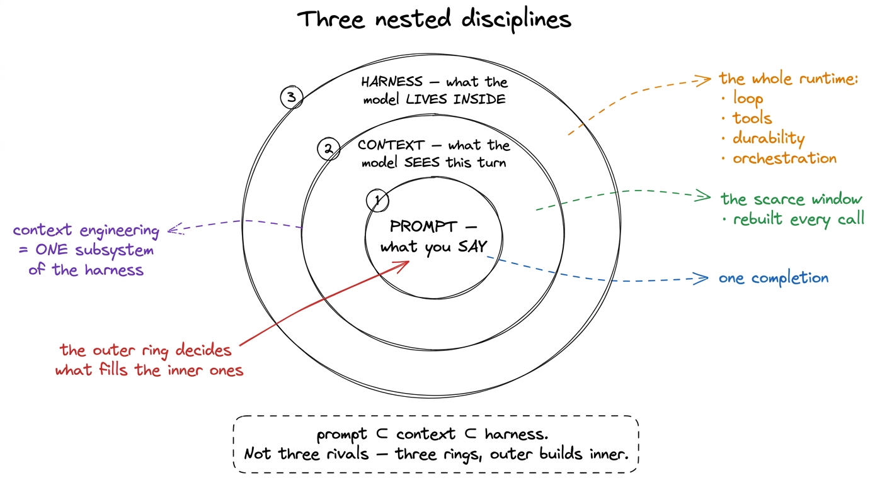
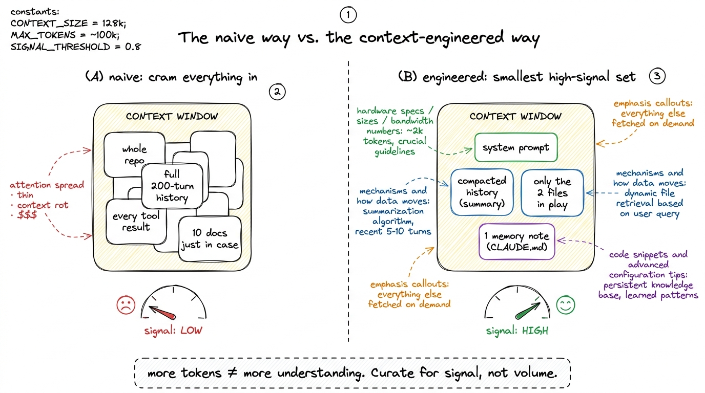
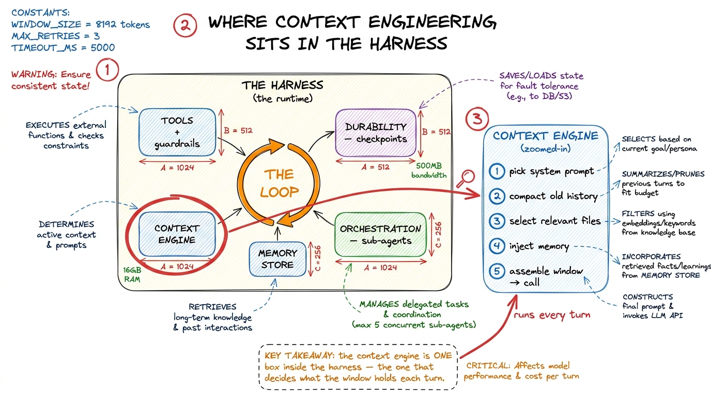
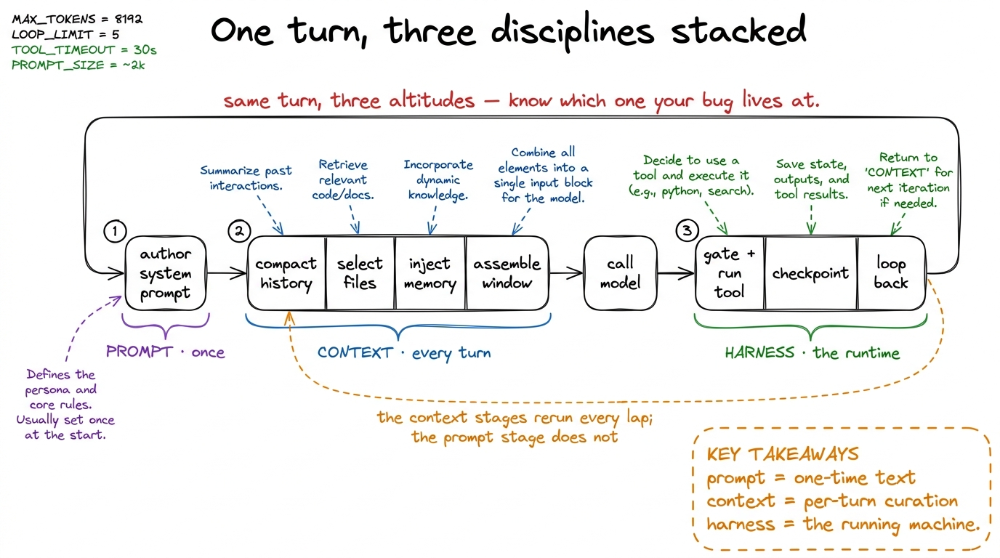

Prompt vs. context vs. harness engineering
Three phrases get used as if they were the same craft: prompt engineering, context engineering, and harness engineering. They are not the same, and I have watched more confusion in this field come from blurring them than from almost anything else. Someone tunes a system prompt for a week and calls it "building an agent." Someone else stuffs their whole codebase into the context window and wonders why the model got dumber. Both are real skills applied at the wrong altitude.
So before we build another layer, let me spend one chapter drawing the boundaries precisely — because once you can see the three as nested, not competing, you will always know which problem you are actually solving. The shape to hold in your head is three concentric circles. The innermost is the prompt. Around it, the context. Around that, the harness. Each outer ring contains and manages the ring inside it.

figure rendering · The three disciplines are nested, not parallel: a prompt sits inside tPrompt engineering: what you say, for one completion
The innermost circle is the oldest and the narrowest. Prompt engineering is the craft of writing a single instruction so that one model completion comes out well. You are optimizing the text of one call: the wording of the task, the examples you show, the format you ask for, the role you assign. "Think step by step." "Return only JSON." "You are a senior Python reviewer." All prompt engineering.
It is real and it matters. A well-shaped prompt can be the difference between a usable answer and a useless one, and inside a harness the system prompt is a genuine lever you will tune carefully.1 The system prompt in a coding agent is high-value prompt engineering within a harness — it sets the agent's persona, its tool-use norms, its stop conditions. We treat it directly in the system prompt as the constitution. Prompt engineering does not disappear inside the harness; it becomes one ingredient of context. But notice its horizon: prompt engineering thinks about one turn. It asks "given this fixed blob of text, what comes out?" It has no theory of a conversation that runs two hundred turns, no theory of files the model hasn't read yet, no theory of what to forget when the window fills. It cannot, because it is scoped to a single completion by definition.
That scope is exactly why it stops being enough the moment you build a loop. The instant the model's output feeds a tool whose result feeds the next call, the interesting question is no longer "what do I say?" but "what does the model see on turn 47, after 46 turns of accumulated history?" That question lives in the next ring out.
Context engineering: what the model sees each turn
Here is the definition I want you to internalize, close to how Anthropic frames it: context engineering is curating and maintaining the optimal set of tokens the model sees during inference — every turn. Not the prompt you wrote once, but the entire assembled input on each individual call: the system prompt, yes, but also the running message history, the tool results, the retrieved files, the memory notes, the summaries of what came before.
The reason this is its own discipline — and a hard one — is that the context window is a finite, scarce resource. It is the single most contended thing in the whole system. And its scarcity is not just a token-count limit; it is a quality limit. Two facts make it so:
- Attention is a budget that depletes. A transformer relates every token to every other token, so as the window fills, the model spreads its attention thinner across more pairwise relationships. More tokens does not mean more understanding.
- Context rot is real. As the number of tokens grows, the model's ability to accurately recall any specific fact inside that context degrades. A buried instruction on turn 3 can be functionally invisible by turn 60. Every model shows this; some just degrade more gently than others.2 This is the counterintuitive part that trips up newcomers: bigger context windows do not remove the problem, they postpone it. A 200K-token window that you fill with 190K tokens of low-signal noise will perform worse than a tight 20K-token window of high-signal tokens. The skill is subtraction, not accumulation.
Put those together and the guiding principle falls out: find the smallest possible set of high-signal tokens that make the desired outcome likely. Context engineering is fundamentally an act of curation under scarcity — deciding, on every single turn, what earns a place in the window and what gets summarized, dropped, or fetched-on-demand instead.

figure rendering · Context engineering is subtraction, not accumulation: the naive agentCrucially, context engineering is cyclical, not one-time. Prompt engineering happens once, at authoring time. Context engineering happens on every loop iteration — the window is rebuilt, or at least re-decided, before each call. That is why it cannot be a prompt you write and forget; it has to be machinery that runs. Which brings us, finally, to the outermost ring.
Harness engineering: what the model lives inside
The harness is the whole runtime the model lives inside — the loop, the tools, the permission gates, the durability layer, the orchestration of sub-agents. Everything wrapped around the borrowed model that turns a stateless text-in-text-out function into something that reads your code, edits files, runs tests, recovers from crashes, and stays coherent across a long task. We built the case for it in what is a harness; the point here is narrower and sharper.
Here is the sentence the whole chapter exists to earn: context engineering is one subsystem of the harness — not a synonym for it. The harness is what does the context engineering. The loop decides when to call the model; the context engine decides what the window holds on that call; the tools produce the results that will (or won't) get appended; the durability layer persists the history that compaction later trims; the orchestrator decides whether this whole context even belongs to one agent or should be split across several. Context is one gear. The harness is the machine.

figure rendering · Zooming into the harness: the context engine is a single subsystem amoThis nesting is not pedantry — it changes what you reach for when something goes wrong. When the model gives a bad answer to a well-scoped single request, that is a prompt problem: fix the wording. When the model had the right information available somewhere but ignored it, or ran out of room, or hallucinated because the relevant file was never in the window, that is a context problem: fix what the model sees. And when the agent ran a dangerous command, or died and lost its work, or spun forever, or should have handed off to a sub-agent — none of those are the prompt or the context. Those are harness problems, and no amount of prompt-tuning will touch them.3 A concrete tell: if your fix is "add a sentence to the system prompt," you are doing prompt engineering. If it is "summarize turns 1–40 before the next call" or "retrieve only the three relevant files," that is context engineering. If it is "gate run_bash behind approval" or "checkpoint after every tool result," that is harness engineering. The layer you edit tells you which discipline you are in.
Reading the three off a single trace
Let me make it concrete with one turn of a real coding agent, so you can point at each discipline in the same object. Imagine the agent is on turn 47 of fixing a failing test.
── THE HARNESS decides: we are mid-loop, model has asked for no
final answer yet → run another lap. (loop + orchestration)
── THE CONTEXT ENGINE assembles the window for this call:
system_prompt # authored once → PROMPT engineering
compacted_summary # turns 1–40 rolled into 400 tokens
recent_messages # turns 41–46 kept verbatim
open_files # only test_auth.py + auth.py, not the repo
memory # 3 lines from CLAUDE.md
→ this selection, every turn, IS context engineering.
── THE MODEL is called on exactly those tokens. It replies:
"run_bash: pytest test_auth.py -k login"
── THE HARNESS runs the tool behind a permission gate, appends the
result, checkpoints, and loops. (tools + durability)Everything the agent says to the model is prompt engineering. Everything about what the model sees this turn is context engineering. Everything about the loop, the gate, the checkpoint, the file selection running as code is the harness. Same trace, three altitudes. This is how Claude Code, Cursor, and pi actually run — a system prompt authored with care, a context engine that compacts and retrieves on every turn, all inside a runtime that loops, guards, persists, and orchestrates.

figure rendering · A single lap read at three altitudes: the prompt is authored once, theWhy the boundary is the most clarifying idea in the field
Keep these three straight and a great deal of the discourse resolves itself. "Prompt engineering is dead" is wrong — it just got demoted to one ingredient of context, which is itself one subsystem of the harness. "Context engineering is the new prompt engineering" is closer, but still sells it short: context engineering is not the outer ring, it is the middle one. The outer ring — the harness — is where safety, recovery, cost, and coherence actually live, and it is the part that is genuinely yours to build.4 This is why pi is such a good teaching object and why we keep returning to it: it makes the harness small enough to read, so you can see the context engine as one file among several rather than as the whole mysterious "agent." The rest of this book builds the outer ring one layer at a time — see what is a harness for the five-layer map.
So carry the picture out of this chapter: prompt ⊂ context ⊂ harness. A prompt is a sentence. Context is a turn, re-decided every turn under scarcity. The harness is the whole machine that decides the turns, runs the tools, survives the crashes, and splits the work. We have already built the innermost mechanics of the machine — your first bare harness is the loop with the thinnest possible everything-else. From here we start filling in the outer rings deliberately, and the very next one is the part that makes an agent dangerous and useful at once: giving it hands. On to tool schemas as contracts.